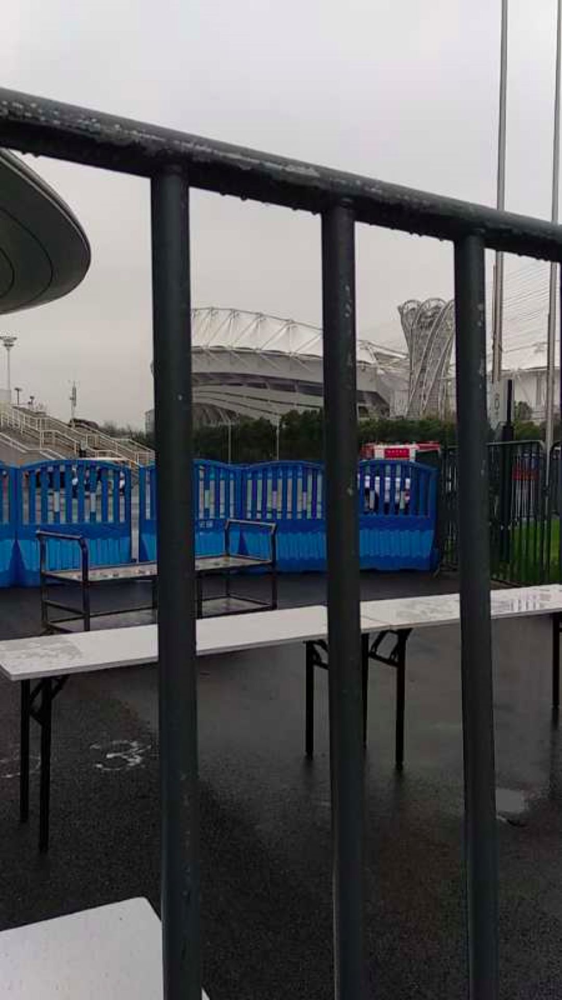
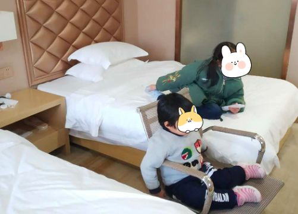

一名重症患者家属的自白
原文链接 备份链接 “ - 疫 情 之 下 - 看到爸爸如此坚强的内心和乐观的心理状态，我也充满了信心。 ” 故 事 练 习 生 习 作 第 58 篇 1月20日晚间，钟南山院士对“新型肺炎人传人”的一句肯定，让全国各地陷入对病毒 …
这段时间，生活乱糟糟的，整天不是担心这个就是害怕那个，三个亲人隔离，我一个人带着两个娃度日，本来可以是悠然的居家时光，却因为疫情让我这个家步履维艰。
口述 | 叶子（化名）
整理 | 黄祺
今天是我33岁的生日——20200220，看起来多么好的数字，但我却要疯了。
早上居委会给我电话，要求我带着两个孩子去集中隔离点，原因是我们一家6口人，已经有3人之前被确诊为新冠肺炎患者。现在我的父母和老公都在方舱医院和集中隔离点，我和孩子们是我家的“幸存者”。
我们没有任何症状，而且我妈妈是最后一个离开家的，她离开家已经12天了。我们已经12天没有和病人接触过，我觉得我们没有被传染。

叶子一家
我希望继续在家隔离，我两个孩子一个3岁一个6岁，平常抵抗力就不好，我害怕到集中隔离点，反而被别人传染了。我跟居委会反映了我家里的情况，但他们说根据现在的规定，我们必须去。
昨天我设想着，今天在家自己动手给自己做个蛋糕，和两个女儿度过这个特殊的生日，跟爸爸妈妈和老公视频问候一下。我连生日愿望都想好了：“希望我的家人都健康平安！！”
现在，我在清理东西、打包……

叶子带两个孩子去隔离点
社区算是照顾我们，联系了一辆轿车送我们一大两小去隔离点，不然就要坐大巴。
老公发烧、妈妈咳嗽、爸爸发烧
我家第一个发烧的是我老公。
除夕之前2天，我老公单位放假，假期里我们几乎所有的时间都在一起，所以至今都不知道他是怎么被传染的。
除夕，我们小家庭在家里吃了年饭，晚上孩子们还看了春节晚会。直到那时，我们都觉得病毒离我们还遥远，毕竟我们住在和汉口隔了条江的武昌。
1月26日上午，老公突然发烧了，没有其他症状，就是头晕乏力，烧得也不高，不到38度，当时我还是挺担心的，让他戴着口罩，吃家里常备的中药，治疗感冒和调理脾胃抗病毒的。第二天老公烧退了。1月29日晚上，老公又开始发烧37.7度，他说可能是洗完澡穿少了有点冷。当晚我们就让他独自隔离，把卧室让给他一个人睡，大女儿在书房睡小床，我和小女儿爸妈挤在次卧的高低床。1月30日老公最高烧到38.3度。从1月29号到2月2日老公一直反复低烧，没有咳嗽，状态基本正常，精神不错，饭也正常吃了，就说吃东西尝不到味道。
那时候武汉的规定是让大家居家隔离，因为老公症状不重，而且当时已经知道，去医院也很危险，所以我们就决定继续在家隔离。
第二个有症状的可能是我妈妈。
1月27日初三我妈妈去了趟超市，买了瓜子回来，吃的时候有点呛到，从那天开始我妈妈就偶尔有点咳嗽，因为以前也有发过支气管炎，当时她也以为是支气管炎，吃了气管炎的药。
后来几天我妈精神没平时好，不知道是不是担心，她基本上一个人待在她房间不怎么出来，我爸爸戴着口罩做饭，我们全家都戴着口罩。我直到现在依然每天戴着口罩，连睡觉都没脱。现在回想起来，我妈妈不舒服那几天，我也有头闷乏力的状态，我爸爸也是说闷，以为是每天戴着口罩宅在家的缘故。
那几天晚上我睡觉的时候有明显感觉到胸部的刺痛，而且畏寒，睡觉要盖多一点才舒服，但是半夜会突然因为头上的虚汗而醒过来，现在想想，可能是病毒已经开始要复制了，然后我就开始给自己灌中药，大概3天之后，胸部刺痛和虚汗消失了。
幸好我一直连睡觉都戴着口罩，才没有让一直跟我睡的小女儿有事。
到了2月2日，老公每天下午低烧37.3的样子，我爸爸也突然发烧了，一下就38.5。爸爸曾因为高烧不退住院一个多月，没查出病因，所以每次爸爸发烧我们就特别担心。
以“疑似病人”身份进了隔离点
2月2日那天晚上，老公和我爸爸妈妈一起去了武汉科技大学天佑医院，希望能做核酸检测确诊一下。他们直到半夜两点多才从医院回来，医院没有试剂盒，没有做成核酸检测。我爸爸和我老公都查了血、拍了CT，老公双肺感染，但是血项报告不算太严重；我爸爸右下肺感染。按照诊断标准，他们都是新冠肺炎，但当时必须要核酸检测阳性才算，爸爸和老公只能算疑似病人。
我们想住院，或者去隔离点。我连夜拨打社区、街道和洪山区公布的各种电话号码，他们的回复是：确诊了才能集中隔离，疑似病人居家隔离。
可是我家有两个小孩，小孩子很难做到关在房间里不出门啊。而且我父母住在同一间，也不能有独自的房间隔离。我当时真的很崩溃。
妈妈到医院也要求医生做CT检查，但医生说只是咳嗽没事，妈妈当天没有做任何检查就回来了。
在我不断的求助下，2月3日，社区终于帮我们联系了隔离点，可以让我爸爸先去隔离点，然后在那里做核酸测试。3日夜晚，我爸爸被送到了位于白沙三路的洪山区委党校隔离点，这是当时洪山区唯一的隔离点，社区说还是加急了才送去的。去之前，社区反复向我们确认，说保证病情不是很重，不能是那种很危险的病人，因为隔离点没有医生，他们很害怕去了重病人，没办法处理。
2月4日我爸爸做了第一次核酸测试，当天他不发烧了，我老公吃了医院的药也没有再发烧。
差点被隔离点拒收的妈妈
我妈妈心理安慰了一些，状态也好了一点，但还是咳嗽，有时候会喘不过气来。妈妈本身有心脏病，做过心脏消融手术，又有轻微房颤，所以那几天我们关注的焦点变成了我妈妈。
我家的体温计被爸爸带到隔离点去了，2月7日下午我收拾东西的时候发现了一个体温计，就让妈妈量一量体温。她自己没感觉，但一量是37.8度。
我们都觉得不妙，我妈妈很少感冒发烧，这次突然发烧让我们意识到，可能我妈妈也被感染了。
家里就剩下我，要坚持住照顾两个年幼的孩子。我妈妈说她最好也去隔离，对我和孩子都好，毕竟这个病毒传染力太强。
于是我又开始了向社区、街道甚至《人民日报》求助。街道的干部跟我说，我妈妈连一份血检和CT报告都没有，隔离点实在很难安排，至少要是疑似患者才能送去隔离，但是社区又没有办法帮我送妈妈去医院做检查。
那几天我每天要做四个人的饭，做各种清洁消毒工作，还要想办法哄着两个女儿尽量留在房间不要到客厅去，晚上又担心妈妈一个人在房间有没有呼吸困难睡不好，我感觉甚是疲惫。
2月8日，妈妈去医院拍了CT,结果显示双肺感染。
社区算是照顾我们，让我妈妈去了爸爸那个隔离点。住进去之前，妈妈问隔离点工作人员：“如果有呼吸困难找谁求助？”这一问，把工作人员吓得，差点不收她。因为他们没有医护人员，不能保证安全。当时已经很晚了，送我妈妈的车把她放下就走了，我妈妈拖着疲惫的身躯，向社区求助，夜里2点多才最终被收了进去。
2月9日，妈妈说隔离点发了中药，他们晚上开始喝中药了。我爸爸做了两次核酸，第一次阴，第二次阳性，我妈妈的咳嗽越来越重了。
第二天下午，爸爸又开始发烧。本来已经有四五天没有发烧，而且他这次一烧就是38度，我妈妈也每天到下午发烧到38度左右，再加上咳嗽厉害，在隔离点没有医护人员询问，她的精神越来越差，担心自己又担心爸爸，她已经处于崩溃的边缘。
爸妈进了方舱医院
2月11日，爸妈依然发烧。妈妈迫切地想要住进医院，仿佛只有看到医生她才有救。我跟社区、街道联系，他们都说要根据核酸结果才能有下一步安排，而公布的洪山区的电话又根本联系不上。那天晚上，我在网上发布了求助的信息，有志愿者加我问了我爸妈的情况，他说帮我报上去可能有安排床位的希望，我半夜还在跟志愿者们说明情况，但也许是因为我父母没有高血压和冠心病这样严重的基础疾病，也没有到呼吸困难缺氧，所以即使报上去也只是排在比较后面。
当时我除了要照顾孩子们，做好日常消毒之外，我的压力也非常大，生怕爸妈出现什么不测，我又无法帮上忙。
2月12日，爸妈的核酸测试都是阳性，这也许是好事。当天的政策已经变成“应收尽收”，确诊患者都要得到相应救治。
当天，隔离点通知我爸妈会被转走，但是没有人知道去哪里。一开始我妈妈听说去方舱医院没有人管，没有药，条件还很差，所以很抗拒去方舱医院。经过我们的劝说，妈妈终于平复心情，接受了可能会去方舱医院的事实。

收治叶子父母的方舱医院
晚上9点，身处洪山区的爸妈被送到了位于汉阳的武汉体育中心方舱医院。2月13日，爸爸妈妈仍然是到下午晚上开始发烧，半夜虚汗不停慢慢退烧，爸爸烧得比较高，几次都要吃退烧药降温，方舱的医生说他的药已经吃了近10天了，副作用太多，让他不要再吃，叫我妈妈最好也不要吃药了。
但我爸爸还在发烧，我和妈妈都很不放心。
2月14日，也在这一天，我妈妈没有发烧了，胃口也好多了，但是咳嗽还是厉害，而且咳狠了还是会喘。我觉得是方舱医院的环境让她心态有所转好，毕竟那里那么多跟她一样的患者，大家可以相互交流，时间过得也快一些，比起一个人在隔离点胡思乱想到崩溃，方舱医院的环境确实更适合患者的调养。

叶子父母拍的方舱医院患者盒饭
2月15日，武汉下起了大雪，2020年的第一场雪，来得确实晚了一点。这一天，爸妈都没有再发烧了，爸爸状态平稳，妈妈还是咳嗽厉害，但是心态已经好多了。
这个艰难自救的冬天
老公从2月12日去了一个酒店隔离点，在隔离点做的第一次核酸测试是阴性，距离他回来的日子近了一点儿，我整个人都感觉轻松了一些，一直揪着的心也稍稍放下了一些。
这段时间，生活乱糟糟的，整天不是担心这个就是害怕那个，三个亲人隔离，我一个人带着两个娃度日，本来可以是悠然的居家时光，却因为疫情让我这个家步履维艰。
2月17日，小区被彻底封锁，不让出去，买菜成为了新的问题，大家只能在群里到处拼团，或者等着六七天才来一次的爱心卖菜队伍进入小区，然后排着长长的队伍买菜。非常感谢几位邻居朋友的青菜援助，让我和孩子们原本天天吃大白菜的日子能够换上口味。
2月19日，妈妈已经5天不发烧了，但是咳嗽还是厉害，爸爸也有4天不发烧了，其他症状也都还好。
老公两次核酸检测都是阴性，基本上没有任何不适的症状，但是隔离点没有能让他回来的意思。
我妈妈很不安，担心他们把我也弄去隔离，那两个孩子就无人照料。社区跟我联系过多次，说上级的要求是我也应该去隔离点，但是我一次又一次跟她们强调我的实际情况，我没有任何不适，两个孩子也都好，并且需要得到照顾，所以她们也没有强制要求我去。
今天，我们一大两小还是去隔离点了。令人欣慰的是，街道的人看我情况困难，申请把我们3个转移到一家酒店隔离了。


征集令
《新民周刊》现面向全国征集新冠肺炎采访对象和真实故事：
如果你是参与抗击新冠肺炎疫情的医护人员或其家属，我们希望聆听你的“战疫”故事，也希望传达你的诉求。
如果你是确诊、疑似患者本人或家属，我们希望了解你和家人如何“抗疫”的过程，让外界了解你的真实经历。
如果你是疫情严重地区的普通市民，我们希望展现你的乐观，并倾听你所需的帮助。
如果你是公共服务人员或各类捐助者，我们希望看到你的“最美逆行”，记录下你的无私。
……
抗击新冠肺炎疫情，我们诚征对疫情了解的社会各界人士，提供相关线索，说出你的故事，让我们用新闻留存这一切。
《新民周刊》新冠肺炎线索征集值班编辑联系方式（添加时请简要自我介绍）：
周一：应 琛 微信号：paulineying0127
周二：金 姬 微信号：gepetta
周三：黄 祺 微信号：shewen-2020
周四：周 洁 微信号：asyouasyou
周五：孔冰欣 微信号：kbx875055141
周六：吴 雪 微信号：shyshine1105
周日：姜浩峰 微信号：jianggeladandong
✳如你需要捐赠物资，可与以下两位工作人员联系:王勇：WangYong-SH 吴轶君：rommy150708（添加时请注明“捐物资”，方便工作人员快速通过您的申请，谢谢。）
新闻是历史的底稿，你们是历史的见证者。期待你的故事、你的线索！

▼
大家还都在看这些
▼
新民周刊所有平台稿件， 未经正式授权
一律不得转载、出版、改编
或进行与新民周刊版权相关的其他行为，违者必究


原文链接 备份链接 “ - 疫 情 之 下 - 看到爸爸如此坚强的内心和乐观的心理状态，我也充满了信心。 ” 故 事 练 习 生 习 作 第 58 篇 1月20日晚间，钟南山院士对“新型肺炎人传人”的一句肯定，让全国各地陷入对病毒 …
原文链接 备份链接 武汉女孩薇薇到现在也不确定妈妈是怎么感染的，她只能想到一个可能性：1月6日，家里为爷爷办了葬礼。当时，大部分人对「出现不明原因病毒型肺炎」的消息并不在意。亲戚们从武汉各地赶来。葬礼后，妈妈开始发烧，之后，爸爸和奶奶也开 …
原文链接 备份链接 联系上倩倩是腊月二十九。当天上午10点，武汉因新型冠状病毒肺炎封了城。她很焦急，她母亲和父亲被隔离在不同的医院，母亲严重，父亲轻微。哥哥也确诊了，但医院不接收，自己在一个酒店房间隔离。她担心虚弱的妈妈在病房里缺少照料。 …
原文链接 备份链接 “ - 疫 情 之 下 - 武汉的疫情就像一簇紧簇的乌云，笼罩在每一个人的心头。但所幸，在这个受伤的城市中，在每台志愿者车里，在疲于奔波的路上，总有那么一群可爱的人，温暖着我们前线医护工作者的心。 ” 1 2020年 …
原文链接 备份链接 武汉封城之初遇上医疗挤兑，“居家隔离”政策随之推出。但社区资源和能力未匹配，反而加重家庭内部交叉传染。这是武汉病例此后暴增的主要原因。 纠错政策姗姗来迟，10天后的2月2日，“居家隔离”变为“集中隔离”。但初期隔离 …